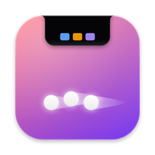

ノッチの棚
ファイルをノッチまでドラッグすると、棚に一時置きできます。参照で置くかコピーで置くかは、スイッチ1つで切り替え。一度に落とした複数のファイルは1つのまとめになり、右クリックで Quick Look や「Finder で表示」も使えます。再起動しても中身は残ります。

トラックパッドを
ジェスチャー
どれも3本指で操作します。ゆっくり指がずれたときや、指を置き直したときには反応しません。スワイプ中は、2本指スクロールで誤ってページが戻らないようにしています。
左へスワイプ
⌃Tab
右へスワイプ
⌃⇧Tab
下へスワイプ
⌘W
上へスワイプ
⇧⌘T
タップ
⌘T
クリック（押し込む）
⌘＋クリック
4本指でクリック
⇧⌘T
親指と2本指でつまむ
⌘R
どのジェスチャーも、そのアプリの
3本指の
対応アプリ
アプリごとに合ったショートカットを送ります。たとえば Arc では ⌥⌘↓、VS Code では ⌥⌘→ を使います。
ターミナルでは、タブの切り替えと新規作成だけが動きます（閉じる・復元はオフ）。Slack・Discord・メールでは何もしません。そのほかのアプリには ⌃Tab・⌘W・⇧⌘T を送ります。
便利機能
どれも最初はオフです。使いたいものだけ、設定でオンにしてください。
ファイルをノッチまでドラッグすると、棚に一時置きできます。参照で置くかコピーで置くかは、スイッチ1つで切り替え。一度に落とした複数のファイルは1つのまとめになり、右クリックで Quick Look や「Finder で表示」も使えます。再起動しても中身は残ります。
ウィンドウやファイルを1本の指で押さえたまま、ほかの3本指で払うと、隣のデスクトップへ移ります。つかんでいるものも一緒に移ります。
左の⌘だけを押すと英数、右の⌘だけを押すとかな。Karabiner-Elements の定番ルールと同じ動きです。4本指タップでも切り替えられます。
5本指で上へスワイプすると、ディスプレイがすぐにスリープします。席を外すときに便利です。
特長
常駐時のメモリは約 13 MB。設定画面は別のプロセスで開き、閉じれば終了します。
タッチやキー入力は、ジェスチャーを判定するために Mac の中で読むだけです。記録も送信もしません。通信はアップデートの確認だけです。
Developer ID で署名し、Apple の公証を通しています。アップデートは自動で届き、許可すれば Mac を使っていない隙に入ります。
MIT ライセンスです。コードを読むことも、Issue を送ることも、Command Line Tools だけで自分でビルドすることもできます。
はじめかた
DMG を開いて、TriTab を「アプリケーション」へドラッグします。Homebrew でも入れられます。
使っているアプリに ⌃Tab や ⌘W などのショートカットを送るために必要です。初回起動時に案内します。
macOS 標準の3本指ジェスチャーを4本指に移します。どこを変えればいいかは TriTab が案内し、ぶつかる設定が残っていれば知らせます。
FAQ
使えます。ただし同じジェスチャーを両方に設定していると両方が動くので、どちらか一方でオフにしてください。macOS 標準のトラックパッドのジェスチャーとぶつかる場合は、TriTab が知らせます。
使えます。設定で TriTab を4本指モードにしてください。すべてのジェスチャーが1本ずつ増えます。
前面のアプリに ⌃Tab や ⌘W などのショートカットを送り、クリックや ⌘キーの操作を知るためです。読み取った内容が Mac の外に出ることはありません。
トラックパッドのタッチを読むのに macOS の非公開の仕組みを使っているため、App Store では配布できません。ダウンロード版は Developer ID で署名し、Apple の公証を通しています。
メニューバーのアイコンから TriTab を終了し、ゴミ箱に入れてください。Homebrew で入れた場合は brew uninstall --cask tritab を実行します（--zap を付けると設定も消えます）。